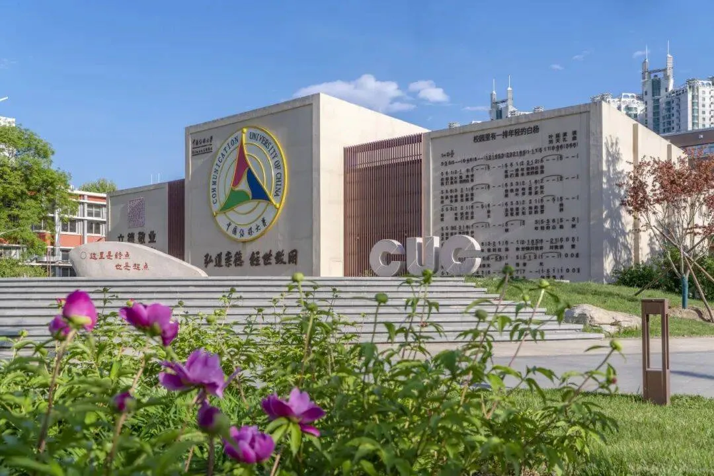
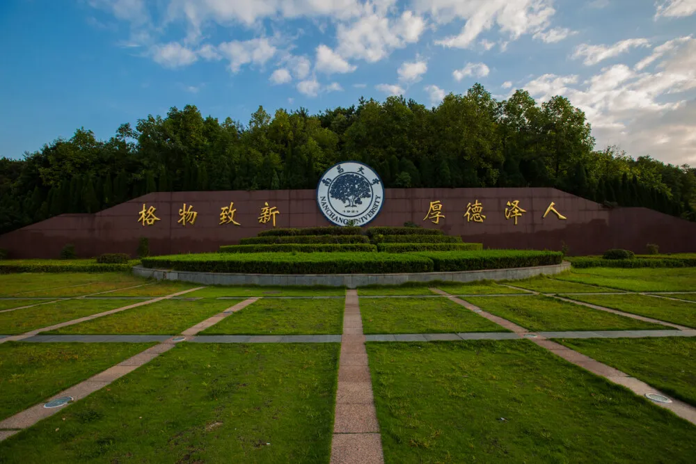
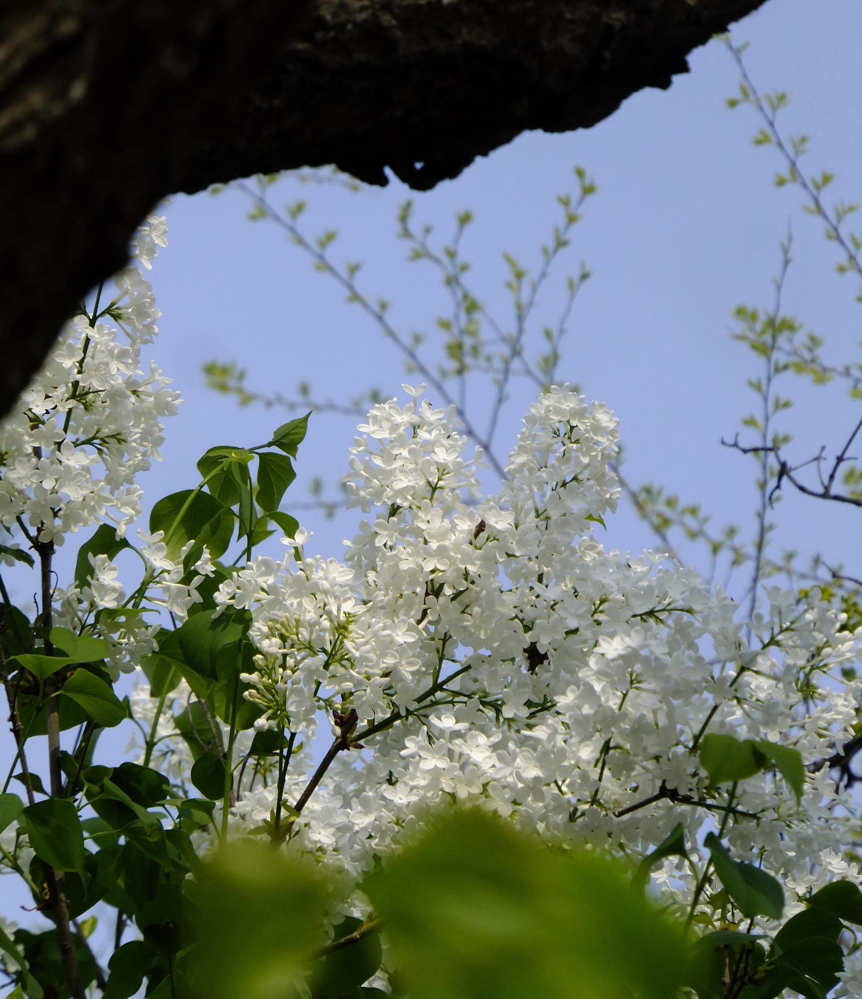
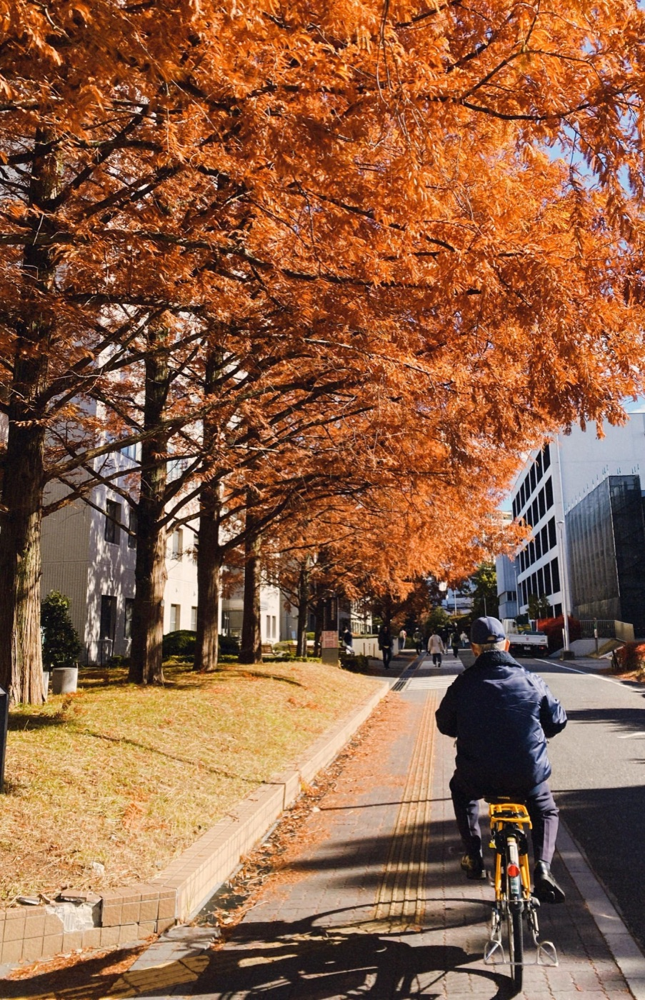
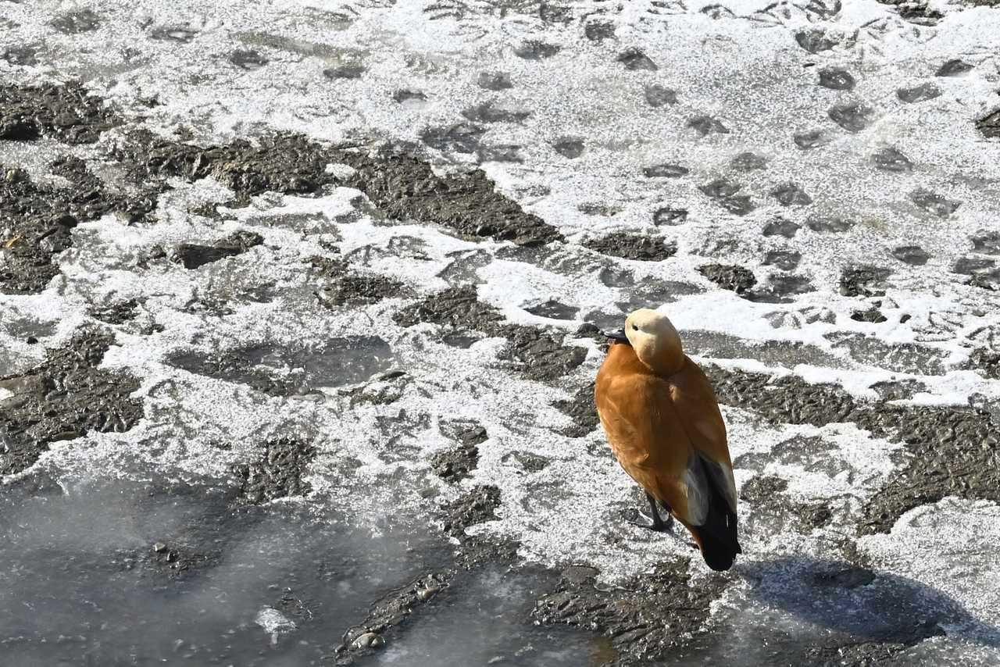

✦✧
硕士 · 推免
中国传媒大学
新闻与传播
2027.09 入学

01 / PROFILE
🎵 音乐 / 生活 / 摄影
AI+内容创作 × 数据叙事 × 短视频策划把复杂讲简单，把简单讲动人。
AI+创意，好内容自然生长。
操盘过 260w+ 阅读的数据新闻，拍过纪录片与广告片，独立运营小红书账号。
AI / 产品、内容运营、短视频运营与品牌公关。

✦✧新闻与传播
2027.09 入学

✦✧新闻学 · GPA 3.72/4.0 · 专业前 6%
2023.09 – 2027.06
02 / WORKS
选择分类，拖动旋转圆环 · 点击卡片查看详情 ✨
03 / JOURNEY
主持面试并制定面试问题与评估标准，与候选人充分交流，累计完成 60+ 人次面试。
统筹策划学术讲座、文体活动 10 余场，覆盖师生 500+ 人次；负责活动材料整编与成果总结，获评「优秀部门负责人」。
统筹公益活动 10 余场，累计服务 800+ 人次；作为 2024 尤尼克斯世界青年羽毛球锦标赛媒体宣传部志愿者，对接新华社、央视网、世界羽联等媒体。
04 / CONTACT
如果你对我的作品感兴趣，或有合作、工作机会，欢迎随时联系我！
春序 / 夏盛 / 秋实 / 冬藏 —— 在平凡日常里捕捉光线与生活的褶皱 · 点击放大



下一段经历，也许可以一起创建～ Let's create together. 🌱